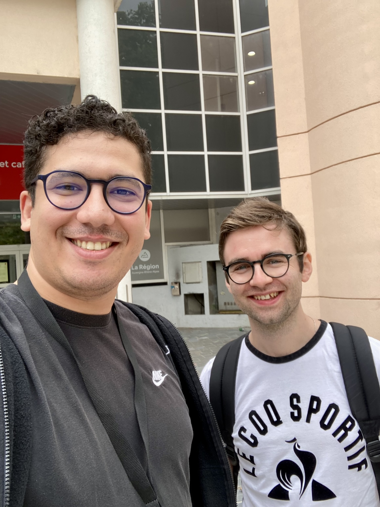
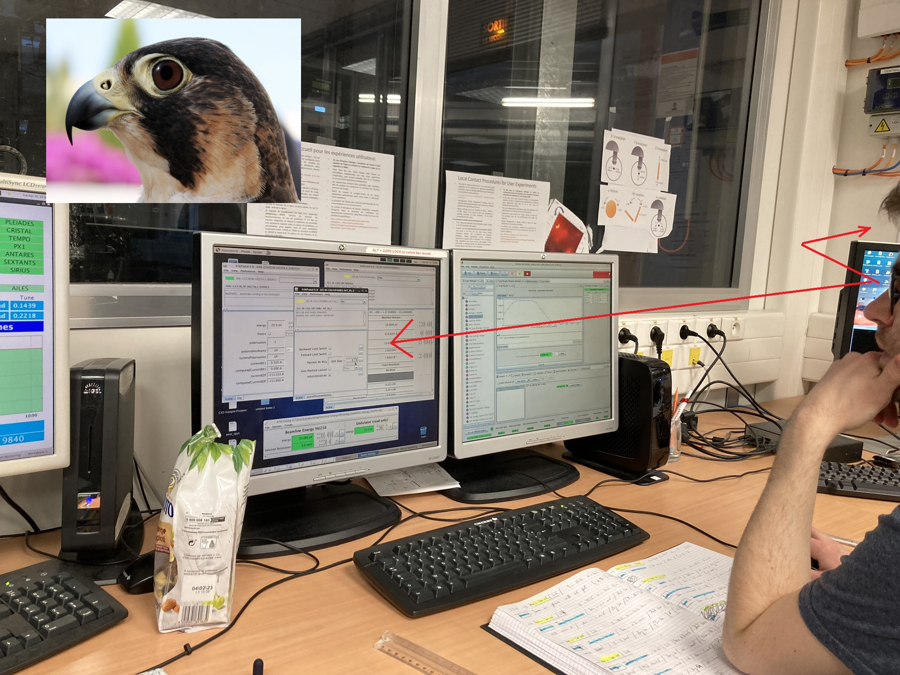
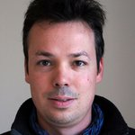
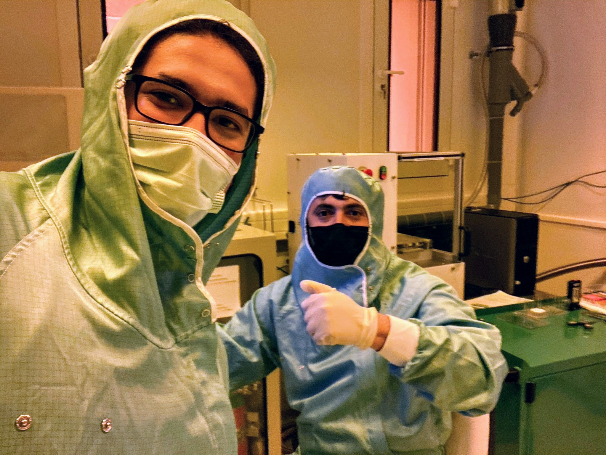
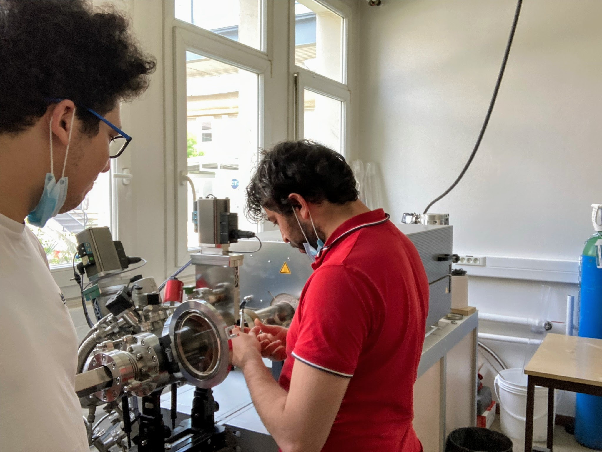
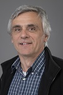

Acknowledgments
I want to thank all the people who have contributed to my success and the people who marked my life via her ideas and lifestyle. In life we meet some people whom can change our view to life.Geoffroy Kremer (le maitre)
My first real intraction with a beamline environment was with Geoffroy in the 2021. During one of the night I have passed with Geoffroy in gnerating spectrum in CASSIOPPEE, I have taken him the picture below while he is activating the "Falcon eye" mode to observe the invisible bands.


Geoffroy activating the Falcon mode to see the invisible bands before being generated just a few moments before starting tilting the head and saying kholala
Fabrice Ohler
Fabrice is a permanent researcher in the MAT2D team. During my thesis, he was my provider for all tungsten deselenide flakes I used. I recongnise also his support, the intersted discussions we had and his help with VESTA software, SEM, XRD and TEM (we have got a good time fixing the broken flake on the TEM grid).
Riadh Othman
Fabrice is a permanent researcher in the MAT2D team. During my thesis, he was my provider for all tungsten deselenide flakes I used. I recongnise also his support, the intersted discussions we had and his help with VESTA software, SEM, XRD and TEM (we have got a good time fixing the broken flake on the TEM grid).



Fausto Sirotti
Mister Sirotti is ....... https://pmc.polytechnique.fr/spip.php?article662&lang=fr